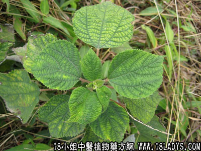

白麻头(中药材植物名:苎麻)(植物科目:荨麻科)

植物名：苎麻。
生长环境：本品为灌木，喜生于稍隐蔽的地方，多为栽培，也有野生的。山区栽培较广，村庄屋舍旁，多有星散种植。
分布：原产我国，各地均有栽培，以江西、湖南最多。
入药部分：根、茎。
采集期：全年。
自采地点：郊区荒地。
性味：性味、味淡。
功能：解毒、敷疮疡，未有溃者穿，已穿者有啜脓之效。
主治、用量和用法：1、红肿恶毒大疮：生用去皮，捣烂敷患处；2、蛇头缠指；3、恙虫病疮：用法同上。
（方歌）白麻头治大恶疮，缠指蛇头不用惊，恙虫病疮无须怕，捣烂敷之体自安。
附录：（叶）治小儿鹅口：用鲜叶和米水蒸热后，将叶蘸该米水洗伤口。
参考资料：植物学称白麻头的为苎麻，草药医生都称麻骨头为黄麻烦，宜区别之，麻骨头根茎如通草，为治麻疹药，用于内服，白麻头根结实，茎为肉质，有胶质，用于外敷。